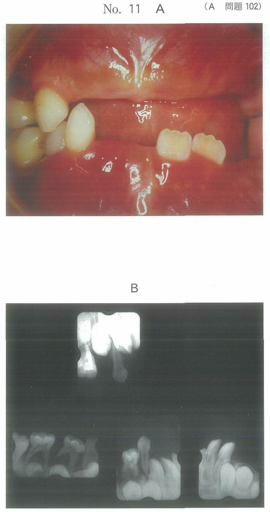
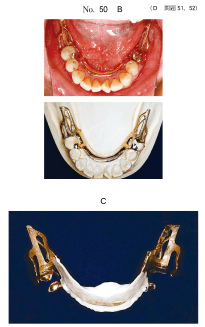
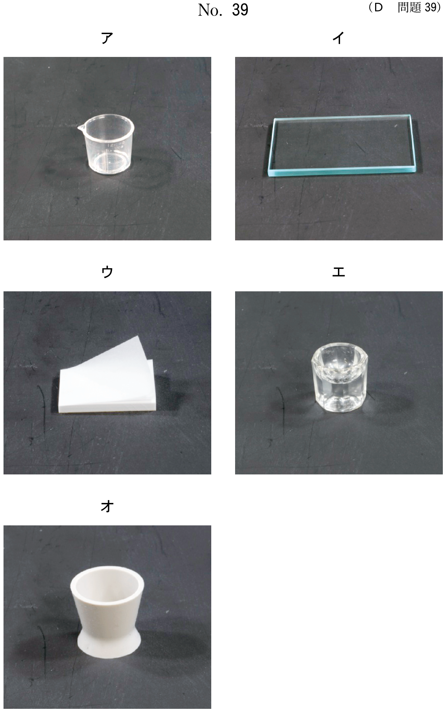
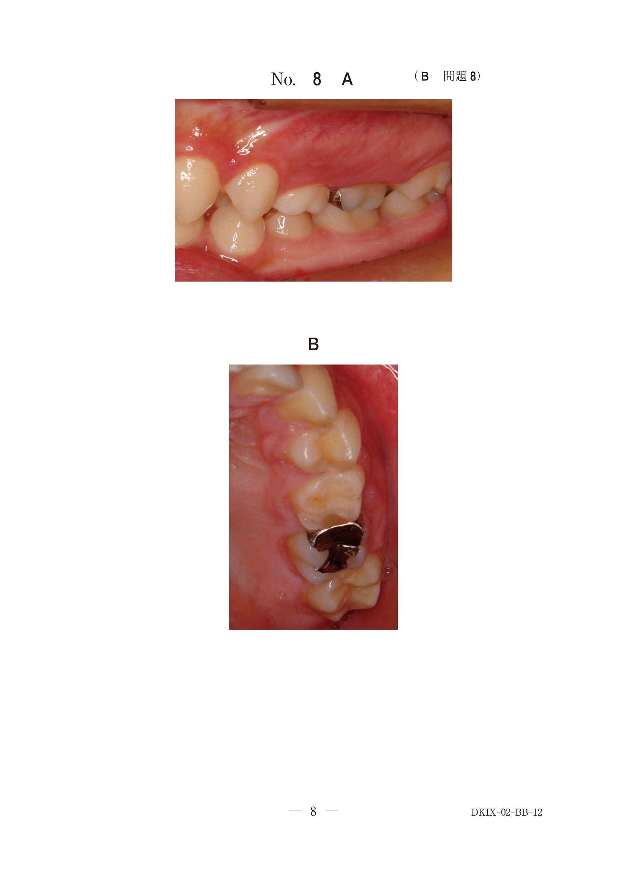
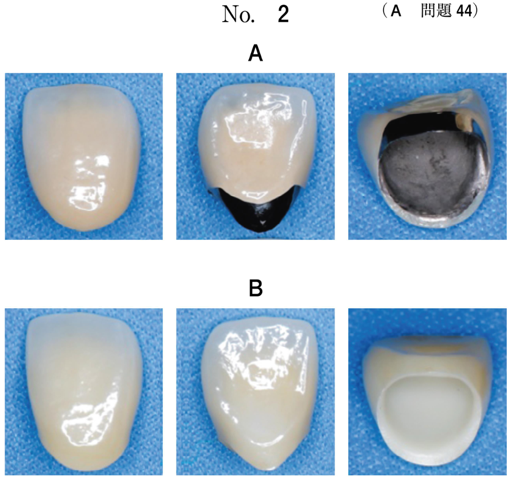
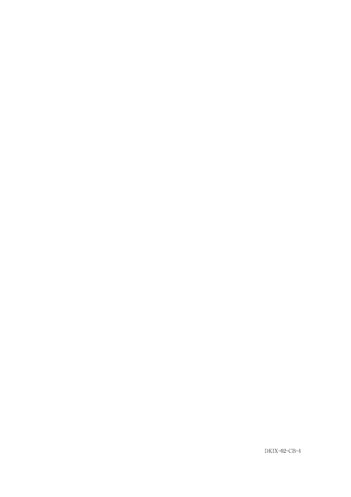
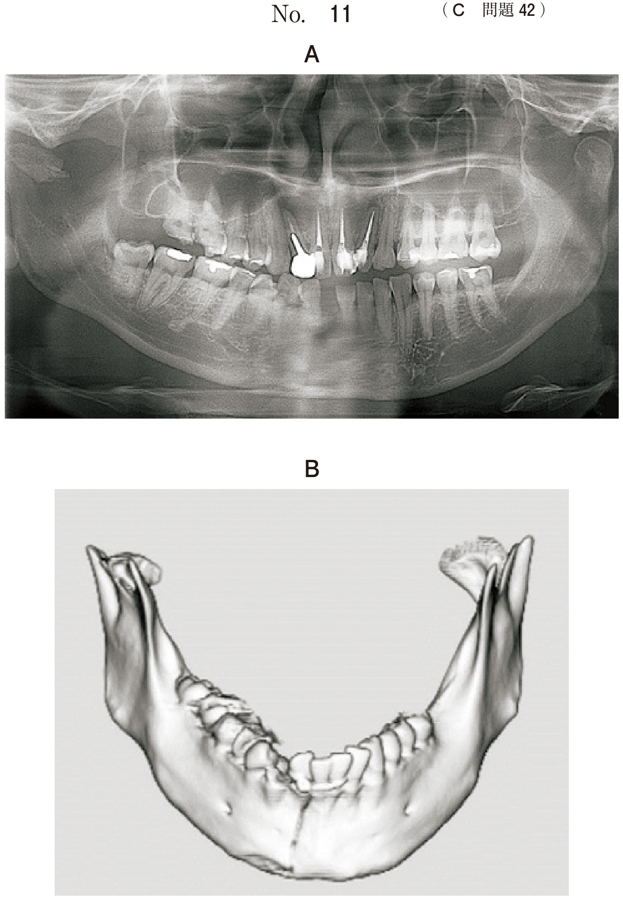
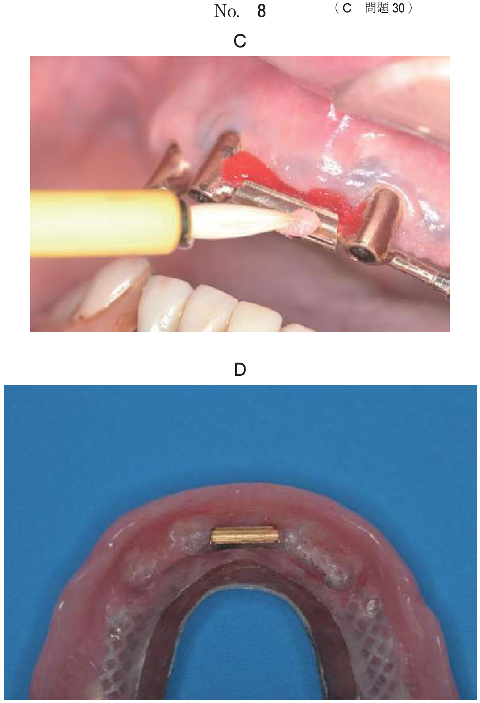

| 順序 | 工程 | 内容 |
|---|---|---|
| 1 | 作業用模型の修正 | ブロックアウト、リリーフ、ビーディング |
| 2 | 複印象・耐火模型の製作 | シリコーンラバー印象材で複製 |
| 3 | ワックスアップ | 耐火模型上でワックスパターン製作 |
| 4 | 埋没 | スプルーイング後、埋没材に埋入 |
| 5 | 鋳造・研磨 | 鋳造後、サンドブラスターで研磨 |
| 6 | フレームワークの試適 | 模型上→口腔内で適合確認 |
義歯の着脱方向に対して生じる不必要なアンダーカットを埋没すること。石膏またはワックスを用いる。
義歯床粘膜面の一部に凹型の空隙を設けること。粘膜に加わる圧を緩衝し、顎堤粘膜の疼痛や潰瘍を防止する。
| 種類 | 部位 | リリーフ量 |
|---|---|---|
| 粘膜リリーフ | 下顎隆起、口蓋隆起、歯槽骨の鋭縁、鋭い顎堤頂 | 0.2〜0.3mm |
| 維持格子部のリリーフ | 維持格子（レジン連結部） | 0.5mm程度 |
維持格子部のリリーフは、義歯床のレジン部分を連結するためのスペースを確保する目的
上顎口蓋部にパラタルバーやパラタルプレートが設計される場合、設計線に沿って模型表面を0.3〜0.5mm削り込むこと。
注意：ガイドプレーンの形成は支台歯形成時、維持腕のワックスアップは耐火模型上で行う
ティッシュストップとは、レジン填入時のフレームの変位や維持格子の変形を防止するために、維持格子の遊離端遠心部に模型粘膜面と直接接するように設定する突起。
レジン重合時のメタルフレームの安定（変位防止）
支台歯のクラスプ外形線の下縁に沿ってワックスを用いて設けたステップ。作業用模型上の設計線を耐火模型上に再現する方法。
レジンとフレームワークの移行部。義歯の強度やレジンの厚みを考慮して付与される。
フィニッシュラインの目的は床用レジンとの円滑な移行を確保すること。
フレームワーク製作時に選択される埋没法。耐火模型ごと埋没材に埋入する方法。
ワックスパターンの変形防止
フレームワークは複雑な形態のため、模型から外すと変形しやすい
印象採得時に加圧しすぎると、模型上では適合するが口腔内では粘膜を圧迫する。
義歯床の一部を金属にする場合、その理由として生物学的要件が挙げられる。金属は清掃性が良く、プラーク付着が少ないため、残存組織の保全に有利。
金属床義歯製作中の写真（別冊No.12）を別に示す。
矢印で示す部位の目的はどれか。1つ選べ。

【解説】矢印はティッシュストップを示す。レジン填入時のフレームの変位や維持格子の変形を防止する目的で設置される。
耐火模型の製作にあたり作業用模型上で行うのはどれか。2つ選べ。
【解説】耐火模型製作前に作業用模型上で行うのは骨隆起のリリーフとビーディングの付与。ガイドプレーンは支台歯形成時、維持腕のワックスアップとティッシュストップは耐火模型上で行う。
60歳の男性。咀嚼障害を主訴として来院した。部分床義歯を製作することとした。フレームワークを試適したところ、支台装置は適合したが、前歯部舌側歯肉に圧迫感を訴えた。口腔内写真（別冊No.50A）、口腔内と模型とにフレームワークを装着した写真（別冊No.50B）及び適合試験の写真（別冊No.50C）を別に示す。原因は印象時に加圧しすぎたことである。
適切な対応はどれか。1つ選べ。


【解説】印象時の加圧過多が原因なので、印象採得から再び行う必要がある。同じ模型を使用しても問題は解決しない。
65歳の女性。上顎部分床義歯の新製を希望して来院した。加熱重合によるレジン床義歯製作用の作業用模型の写真（別冊No.12A、B、C）を別に示す。
矢印で示す部位とその部位の調整に用いる材料との組合せで正しいのはどれか。1つ選べ。

【解説】ウは歯や金属に接する部位のブロックアウトであり、石膏を用いる。最終的にレジンに置換する部位にはワックスを用いる。
部分床義歯の床内面の写真（別冊No.6）を別に示す。
矢印で示す部位を金属にした理由はどれか。1つ選べ。

【解説】金属は清掃性が良くプラーク付着が少ないため、生物学的要件（残存組織の保全）を満たす目的で金属床とする。
サベイングを終えた作業用模型の写真（別冊No.4）を別に示す。
矢印で示すサベイラインをもとに決定するのはどれか。2つ選べ。

【解説】サベイラインは着脱方向に対する最大豊隆線。これをもとにブロックアウトの領域と内フィニッシュラインの走行を決定する。
部分床義歯のフレームワーク製作時に型ごと埋没法を選択する理由はどれか。1つ選べ。
【解説】型ごと埋没法は耐火模型ごと埋没材に埋入する方法。フレームワークは複雑な形態のため、模型から外すと変形しやすい。ワックスパターンの変形防止が目的。
68歳の女性。上顎義歯の破折による咀嚼困難を主訴として来院した。使用中の義歯は5年前に製作したが、何度も破折し修理を繰り返しているという。診察の結果、金属床による部分床義歯を新製することとした。義歯製作中のある過程の写真（別冊No.17）を別に示す。
矢印で示す構造の目的はどれか。1つ選べ。

【解説】矢印はフィニッシュラインを示す。床用レジンとの円滑な移行を確保するために付与される。
上顎義歯の写真（別冊No.17）を別に示す。
矢印で示す構造の役割はどれか。3つ選べ。

【解説】矢印はビーディングによる凸部を示す。ビーディングの効果は舌感の向上、鋳造収縮の補償、辺縁封鎖性の向上。